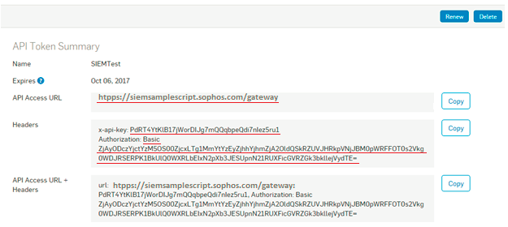

Sophos Central has secured APIs available for customers. These allow the retrieval of event and alert data from
Sophos Central, for use in other systems.
1 You require a token to access event data via the API. In Sophos Central Admin, go to Global Settings > API Token Management.
2 To create a new token, click Add token from the top-right corner of the screen.
3 Select a token name and click Save. The API Token Summary for this token is displayed.
4 Click ont the Copy button to copy your API Access URL + Headers from the API Token Summary section into your clipboard. 
5 Insert information in the following inputs.You can add more than one Sophos configuration by clicking on Add tenant button.
6 Click on the button shown below, to activate the UTMStack features related to this integration